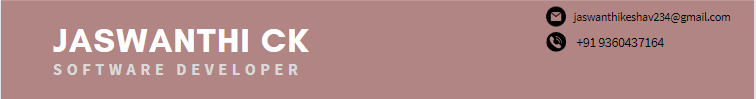

Summary
Interactive ELT Developer with 2.8 years of experience involving the knowledge of middleware technologies (ODI and Weblogic) and MFT. With deep passion for innovation, am always on the look to gain knowledge on new technology and skills.
Technical skills
- Tools
- Oracle Data Integrator, Globalscape EFT, BMC Control-M, Putty, SOAP UI, Winscp, Mobaxterm
- Languages
- SQL, PL/SQL, XML, XSD, Python, HTML, CSS
- Database
- SQL Plus, Oracle SQL Developer
- Operating System
Work Experience